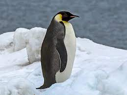

Penguins are flightless birds that are highly adapted to living in the water.
They are found in the Southern Hemisphere, primarily in Antarctica.
The Emperor Penguin is the largest of all penguin species and can grow up to 1.2 meters in height.
They are known for their striking black and white plumage and their ability to withstand extremely cold temperatures.
The Adelie Penguin is one of the most common penguin species in Antarctica.
They have a distinctive white ring around their eyes and are known for their playful behavior both on land and in the water.
The Gentoo Penguin is recognizable by the bright orange-red bill and the white patch above each eye.
They are known for their fast swimming speed and are often found in rocky coastal areas.